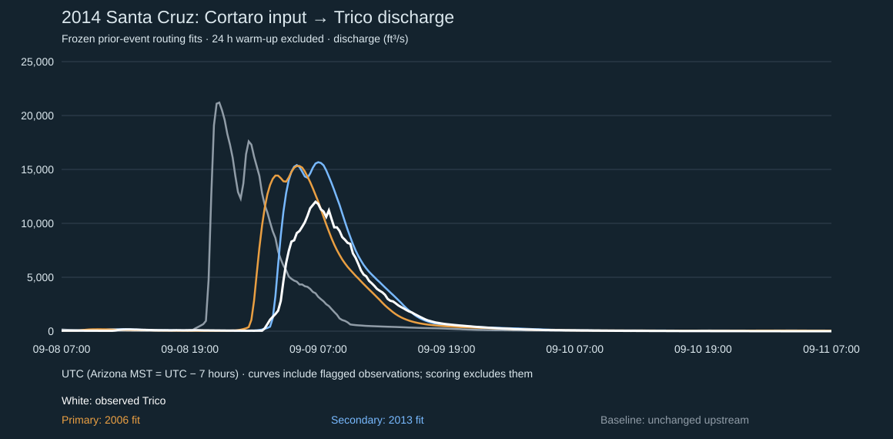

FLOODplain / First quantitative benchmark
A flood routed downstream
Real 2014 upstream observations, parameters fitted only on separate earlier floods. Results below include every predeclared candidate, even when wrong.

Observed sampled Trico peak: 12000 ft³/s at 2014-09-09T06:45:00.000Z. Positive time error is late; negative is early.
| Model | Predicted peak ft³/s | Peak error | Timing error | RMSE ft³/s | NSE |
|---|---|---|---|---|---|
| Primary: 2006 fit | 15320 | 27.7% | -105 min | 2514 | 0.264 |
| Secondary: 2013 fit | 15668 | 30.6% | 15 min | 1454 | 0.754 |
| Baseline: unchanged upstream | 21200 | 76.7% | -540 min | 5273 | -2.239 |
Primary parameters: 225 min lag + 90 min storage. Secondary: 345 + 75 min. Unit transmission, no tributary inflow or fitted 2014 correction. Scored 273 exact matched approved unqualified observations after a fixed 24-hour warm-up.
These scores test only discharge routing between two gauges. Missing lateral inflow, channel losses, changing flood-wave speed, channel geometry and initial conditions can dominate errors. The 2006 calibration includes estimated observations, retained in raw data and excluded from target fitting; its channel may differ from 2014.
Download curves, scores and provenance · Frozen primary parameters · Frozen secondary parameters · Rainfall and terrain lab
Generated 2026-11-01T06:58:54.876Z. No live integration or operational advice. Browser visual QA remains unperformed.